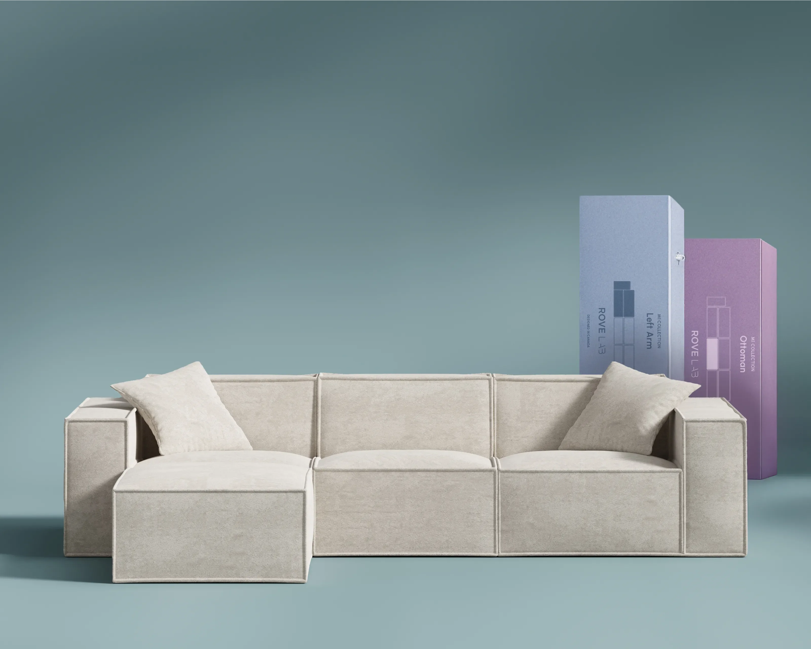
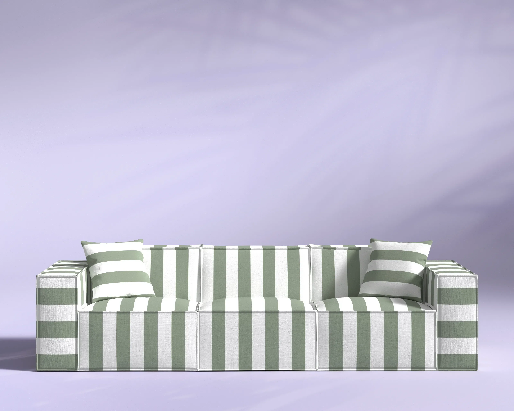
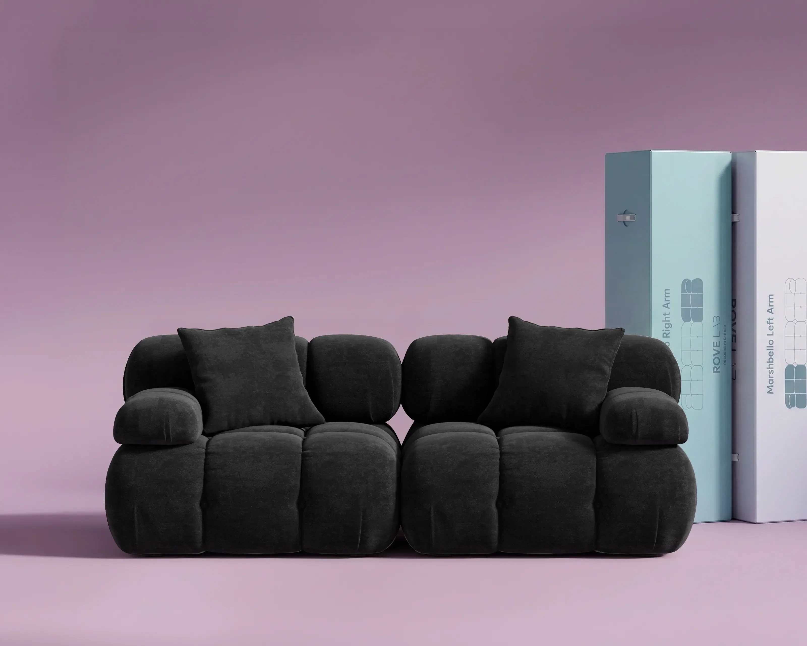
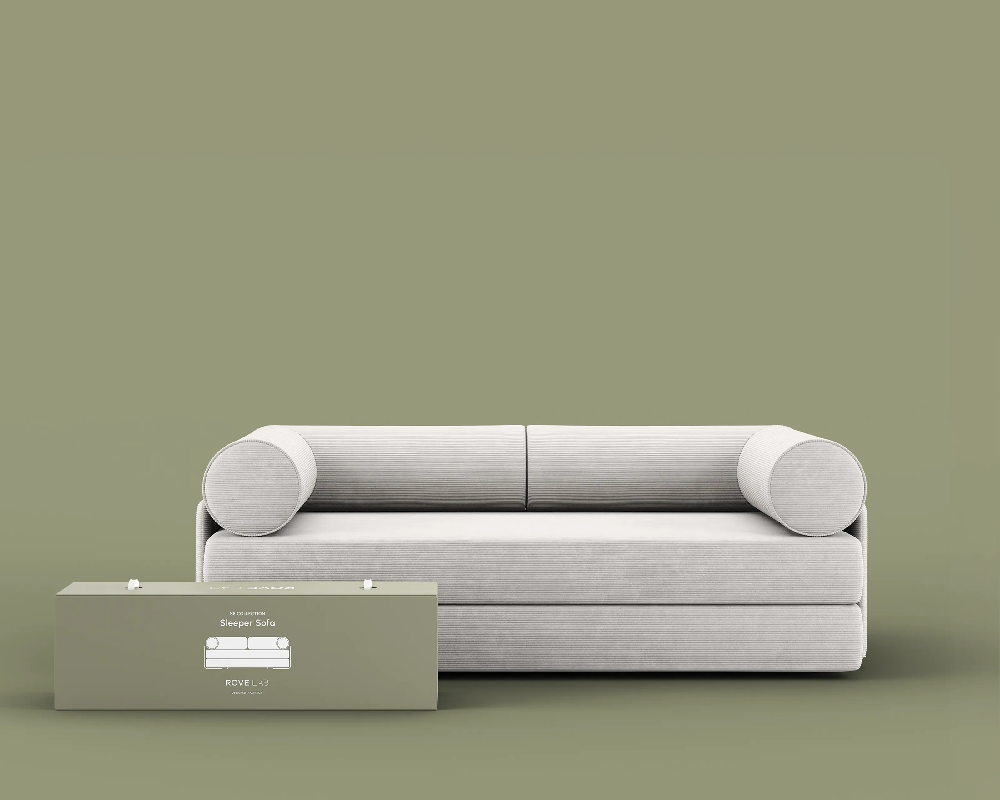

It was really fun opening it and watching it expand! It only took three days until it was finished expanding. Love this couch!
Trinaa A. Verified
SmartFoam™ · Proprietary technology
The proprietary foam that replaces the frame: compresses into a box, expands in minutes, holds its form for years.
SmartFoam™ is not memory foam. More than cushioning, SmartFoam™ is the structure itself, a proprietary high-density foam system designed to:
Designed for compact shipping and easier moving. A full sectional leaves the lab as a box one person can carry.
Expands rapidly after unboxing, with tool-free assembly. No screws, no hardware, no instructions to decode.
Delivers long-term comfort, support and durability. Expansion Memory returns SmartFoam™ to its engineered shape, sit after sit.
Open-cell architecture that breathes, responds to load, and recovers fully, sit after sit, year after year.
Soft at first touch. Firm at full lean. SmartFoam™ adapts pressure and resistance depending on how weight is distributed across the surface.
Compressed for shipping and engineered to expand into full form upon arrival. SmartFoam™ returns to its engineered shape every time, and stays there.
One material · Structure + comfort · Designed by Rove Lab

For over a century, furniture has relied on the same hidden structure: wood, metal and springs.
A system built around limitations
We started Rove Lab to rebuild it.

BIFMA certified · SGS lab testing, March 2026
The BIFMA impact and drop protocol runs a seat past 100,000 cycles — the bar for contract furniture in airports, offices and hotels. SmartFoam™ clears it.
A sofa with no frame. No wood. No metal. No staples. Built without bones, built to outlast them.
A sectional furniture that arrives at your door and fits in your elevator. By reducing shipping volume, SmartFoam™ also helps generate up to six times less carbon per shipment.
No tools. No instructions. Just unbox your furniture and let it expand within minutes.
Rearrange your sofa however you want. Lightweight, flexible and easy to reconfigure as your space and lifestyle change.
SmartFoam™ doesn't just replace a frame. It replaces an industry that hasn't asked the right questions in a hundred years. And we're just getting started.
SmartFoam™ is built for long-term performance and tested to exceed industry durability standards.
Every Rove Lab product is backed by our Lifetime Guarantee.
The structure you can't see. The comfort you can feel.




Explore the Lab Boneless Couch
Swipe to compare
| Characteristics | SmartFoam™ Boneless Design™ | Traditional foam sofa Wood, metal, springs |
|---|---|---|
| Support system | No frameSmartFoam™ is the structural core | FrameWood, metal and spring frame provide structure |
| Foam density | 34.8 kg/m³Engineered for structural support | VariesStandard cushioning foam varies by manufacturer |
| Delivery | Couch-in-a-boxCompressed, shipped compactly and carried by one person | FreightBulky freight with scheduled delivery |
| Assembly | Tool-freeUnbox, connect modules and let it expand | Tools neededRequires tools, hardware and instructions |
| Moving & fit | LightweightFits through doorways, elevators and smaller spaces | HeavyDifficult through tight spaces |
| Reconfiguration | ModularModular design allows you to rearrange anytime | FixedOne fixed layout |
| Durability | 100,000+ cyclesBIFMA tested and designed to maintain shape | DegradesFrames and cushions can lose performance over time |
| Shipping footprint | 6× less carbonCompact packaging reduces shipping volume | Larger volumeLarger freight volume |
Memory foam is a slow-recovery cushioning material (typically 50-90 kg/m³) designed to sink and mould around your body. SmartFoam™ is a structural foam. At 34.8 kg/m³ it is engineered to replace the sofa frame itself: built to compress into a box, expand back into full form and hold that shape for years. Memory foam sits on top of a frame; SmartFoam™ is the structure.
A couch-in-a-box is a sofa that ships compressed inside a compact box instead of as bulky freight. Because SmartFoam™ can be compressed and then expand back into its engineered shape, a full sectional fits through doorways and elevators, needs no delivery appointment, and can be carried and set up on your own.
A boneless couch is a sofa built without a rigid internal frame: no wood, no metal, no springs. In a Rove Lab Lab Boneless Couch, SmartFoam™ performs the structural role the frame used to perform. We call this architecture Boneless Design™.
Yes. SmartFoam™ is tested to contract-grade standards: 70,000+ abrasion cycles (ASTM D4157), 100,000+ BIFMA impact cycles, seam strength up to 1,088 N (ISO 13935-1) and zero detectable formaldehyde (ISO 14184-1). Every Rove Lab product is backed by a Lifetime Guarantee.
Yes. SmartFoam™ is engineered to deliver the support, shape and durability that wood, metal and springs provide in traditional furniture. That is why Rove Lab sofas have no internal frame at all, an approach we call Zero-Frame Construction.
Try it at home
If SmartFoam™ isn't the most comfortable, most livable couch you've ever owned, send it back. That's how sure we are.
Real homes, real reviews
4.6 out of 5 across 1,057 verified reviews.
It was really fun opening it and watching it expand! It only took three days until it was finished expanding. Love this couch!

My favorite part is being able to change the configuration. It's like having a new couch every day. Sometimes we even split them up between rooms.

I've been thinking about getting this couch for some time. I am extremely happy with it! It's firm and comfortable and great size!

The M1 is perfect! It's so comfortable and well made! Shipment went smoothly & arrived quickly. Highly recommend!

I researched 'boneless' sofas for several months. It was a smart purchase and I am extremely pleased with the quality. I was skeptical but I am convinced.
It was really fun opening it and watching it expand! It only took three days until it was finished expanding. Love this couch!
My favorite part is being able to change the configuration. It's like having a new couch every day. Sometimes we even split them up between rooms.
The M1 is perfect! It's so comfortable and well made! Shipment went smoothly & arrived quickly. Highly recommend!
4.6/5 · 1,057 verified reviews · Read all reviews